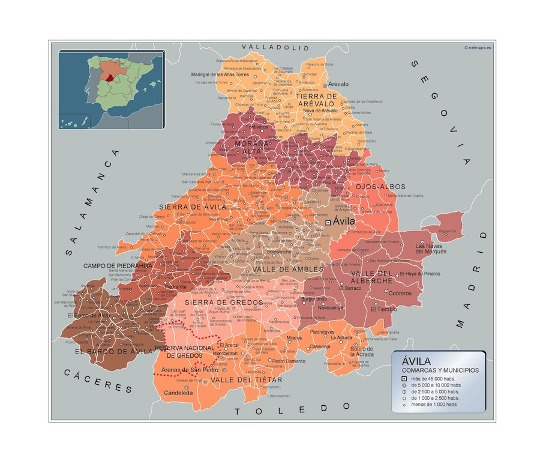
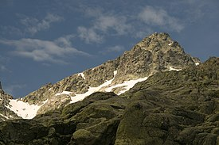
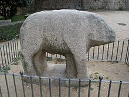
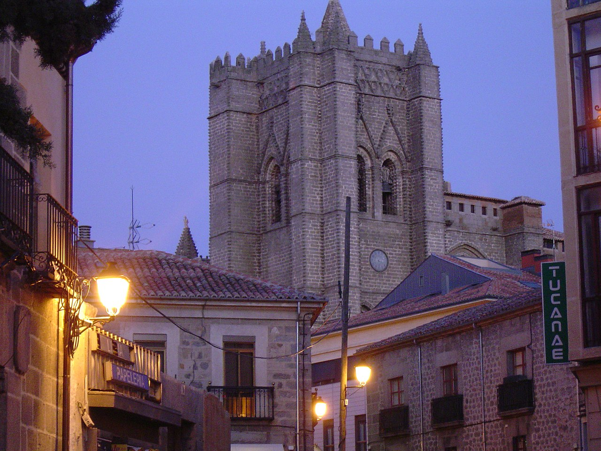
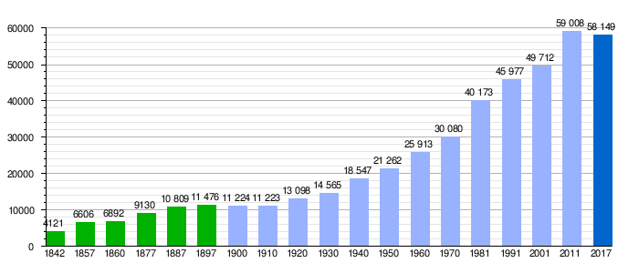

Ir a Zamora
Ir a Salamanca
Ir a leon
Ir a Valladolid
Ir a Palencia
Ir a Burgos
Ir a Soria
Ir a Segovia
LOCALIZACIÓN
Ávila está localizada geográficamente en la Meseta Norte de la península ibérica. Se halla situada a 1131 m de altitud, en un promontorio rocoso en la margen derecha del río Adaja —afluente del Duero— y se trata de la capital de provincia más alta de España. Su término municipal abarca 231,9 km², el 3 % de la superficie de la provincia.
La ciudad es capital de la provincia de Ávila y de la comarca de Ávila —que comprende el Valle de Amblés y la Sierra de Ávila—, así como sede del partido judicial número 3 de la provincia y de la diócesis homónima.
El término municipal de Ávila —con un perímetro muy irregular— limita al norte con los de Cardeñosa, Mingorría, San Esteban de los Patos, Tolbaños, Berrocalejo de Aragona, Mediana de Voltoya y Ojos-Albos, al este con el de Santa María del Cubillo, al sudeste con los de Navalperal de Pinares y Herradón de Pinares, al sur con el de Tornadizos de Ávila, al suroeste con el de Gemuño, al oeste con los de El Fresno, La Colilla, Martiherrero y Marlín y al noroeste con los de Bularros y Monsalupe. El territorio del término municipal está representado en las hojas 506, 531 y 532 del Mapa Topográfico Nacional.
VOLVER ARRIBA
LOCALIDADES PRINCIPALES
A cotinuación se muestra un mapa interactivo de la provincia de Ávila. Si clicamos en los nombres nos redirigira a la web oficial de cada zona 
VOLVER ARRIBA
GEOGRAFÍA
Es propio de esta provincia su gran diversidad orográfica. Es la provincia de mayor altitud en promedio de España, con una altura media de 1131,8 m. Se distinguen tres grandes regiones:
La zona norte, continuación de la Meseta Norte y del valle del Duero está caracterizada por un paisaje llano con suelos formados por materiales sedimentarios. Comprende la comarca de La Moraña. Los principales municipios son Arévalo y Madrigal de las Altas Torres.
La zona central donde se localizan el Valle de Amblés, el del Corneja y las zonas de montaña (sierra de Gredos, sierra de Béjar, sierra de Villafranca, La Serrota, sierra de la Paramera, sierra de Ávila o la sierra de Malagón) presenta ingentes formaciones graníticas que alcanzan su mayor altitud en el Pico del Moro Almanzor, que con 2592 metros es la cumbre culminante de la sierra de Gredos y la más elevada de todo el Sistema Central. Su clima de montaña se caracteriza por temperaturas muy bajas en el periodo invernal y veranos cortos y no muy calurosos. Son localidades importantes Ávila, Las Navas del Marqués, El Barco de Ávila y Piedrahíta.
La zona al sur del Sistema Central que comprende la parte abulense del valle del Tiétar está caracterizada por su menor altitud y un clima más cálido. En esta parte es fácil encontrar naranjos, olivos y palmeras en los principales pueblos. Entre los municipios más importantes de esta zona se encuentran Arenas de San Pedro, Candeleda, Sotillo de la Adrada, Mombeltrán y Lanzahíta.
PICO MÁS ALTO
Pico Almazor
El pico Almanzor, a veces citado como Plaza del Moro Almanzor, es una montaña de la península ibérica, la cumbre más alta de la sierra de Gredos y de todo el sistema Central, con 2591 m s. n. m. y una prominencia de 1690 m. Se localiza en la provincia castellano-leonesa de Ávila, España; su cumbre forma parte de la divisoria entre los municipios de Arenas de San Pedro, Hoyos del Espino y El Hornillo. Está considerado un «pico ultraprominente», categoría que incluye a las montañas con una prominencia mayor de 1500 m.
source:https://es.wikipedia.org/wiki/Pico_Almanzor#/media/Archivo:Almanzor_sierra
{kind=link}
VOLVER ARRIBA
HISTORIA
Edad Antigua
Algunos historiadores apuntan que la actual ciudad de Ávila fue una fundación ex-novo de los romanos, quienes le darían la denominación de Abila, Obila, Abyla o Abela. La ciudad romana estaba formada por el actual casco viejo, la zona rodeada hoy día por las murallas. La antigua presencia romana en la ciudad se manifiesta a través del puente romano, la calzada y distintos mosaicos, que son algunos de los restos de esta época que han sobrevivido hasta la actualidad. La necrópolis romana estaba situada al este, más allá de la calle de San Segundo, de modo que en toda esa parte de la muralla se pueden observar piezas funerarias reaprovechadas como materiales de construcción: estelas, aras, miliarios, «verraquitos» y estelas y cápsulas cinerarias de granito, incrustados en los lienzos del muro oriental.
Verraco de las Cogotas
Edad Media
Los primeros asentamientos visigodos en la península se realizaron de forma paulatina y en grupos reducidos a lo largo del siglo v y comienzos del siglo vi. Tras ocupar los visigodos en un primer momento la Galia —reino visigodo de Tolosa posteriormente se extenderían por el territorio peninsular para terminar formando el reino visigodo de Toledo en el siglo vi, que perduraría hasta la invasión musulmana.
Los visigodos utilizaban la tierra para cultivar cereal y alimentar al ganado. Los principales testimonios de esta dominación visigoda en Ávila provienen de pizarras inscritas encontradas en distintos puntos de la provincia, entre las que destacan las de la localidad de Diego Álvaro. La importancia de Ávila en este periodo se debió a su carácter religioso, ya que se contó con la intervención de prelados de Abela en los concilios toledanos. Ávila fue sede episcopal durante la dominación visigoda. En el año 610 se dio preeminencia a la capital y a su obispo sobre todas las demás iglesias provinciales, en un decreto emitido durante el reinado de Gundemaro. Otra huella de la etapa visigoda en Ávila es el templo de Santa María la Antigua. Las crónicas registran que este monasterio fue fundado antes del año 687, y habría sido monasterio mixto —monjes y monjas— hasta la llegada de los árabes.
Edad Moderna
Durante el reinado de los Reyes Católicos, en la segunda mitad del siglo xv, y de Carlos I y su hijo Felipe II, ya en el siglo xvi, la ciudad volvió a renacer gracias a las idas y venidas de la corte. Ávila prosperó y la provincia fue testigo del nacimiento de varios personajes religiosos, escritores y consejeros espirituales como fueron Teresa de Cepeda y Ahumada —más conocida como Santa Teresa de Jesús—, nacida en la capital, y San Juan de la Cruz, que nació en la localidad de Fontiveros. Su concejo fue uno de los principales organizadores de la Guerra de las Comunidades y en ella se formó la primera Santa Junta
A partir de finales del siglo xvi y comienzos del xvii la ciudad comenzó una larga decadencia y despoblación. El inicio de este declive se vio inscrito en la fase de dificultades que atravesaba el Imperio español, que arrastró consigo a Castilla. En 1599 una epidemia de peste se llevó consigo a casi el 12 % de la población de la ciudad. Por otra parte la expulsión de los moriscos dictada en 1609 por el monarca Felipe III afectó al 13,8 % de los habitantes de Ávila.114 Otros factores que incidieron en la decadencia de la ciudad fueron la caída en picado de la actividad textil y la gran cantidad de mendigos, amparados por el elevado número de instituciones benéficas existentes en la ciudad. En 1618 la ciudad contaba solo con 1500 habitantes, cantidad que aumentaría a los 4085 correspondientes al año 1752.
A continuación le dejamos un documental de la historia de Ávila, es un tanto antiguo pero es recomendable verlo si quieres saber aún más sobre la historia.aquíel link del video.
VOLVER ARRIBA
CULTURA
Museos
El principal museo de la ciudad es el Museo de Ávila, inaugurado en 1911. En el año 1968 adquirió identidad de Museo Provincial. Está gestionado por la Junta de Castilla y León desde 1987. El museo consta de dos localizaciones: la Casa de los Deanes, un palacio renacentista del siglo xvi que funciona como sede principal y la iglesia de Santo Tomé, levantada originalmente en el siglo xii, que se utiliza como almacén visitable. Las colecciones se engloban en tres grandes secciones: una representativa de la cultura rural de la provincia, otra que recoge piezas halladas en territorio abulense desde la Prehistoria hasta el siglo xix y finalmente una dedicada exclusivamente a piezas arqueológicas encontradas en excavaciones urbanas de la ciudad de Ávila.
En el interior de la catedral de Ávila, está instalado el museo de la Catedral, que alberga una exposición de arte religioso. En el convento de la Encarnación también existe una exposición permanente, que muestra diversos testimonios históricos de Santa Teresa de Jesús así como diversas piezas de arte religioso. También conserva piezas relativa a la vida y obra de San Juan de la Cruz.313En la cripta del convento de Santa Teresa se localiza museo de Santa Teresa, que expone la obra y vida de la santa, así como diversas piezas de arte religioso
Gastronomia
Son característicos en las mesas abulenses los platos de judías del Barco, el chuletón de Ávila, las patatas revolconas y las yemas de Santa Teresa. También son típicos de la ciudad el hornazo, bollo de pan relleno de chorizo, tocino, lomo y huevo, las mollejas de ternera o el cochinillo (denominado tostón asado), cuchifrito en la capital y al horno en Arévalo.
- Yemas de Ávila. Este dulce típico de la ciudad es fabricado en la pastelería tradicional «La Flor de Castilla» con el nombre de «Yemas de Santa Teresa». El resto de pastelerías de la ciudad también lo fabrican pero bajo la denominación genérica de «Yemas de Ávila» o simplemente «Yemas». Se elaboran como su propio nombre indica a partir de la yema de huevo.
- Chuletón de Ávila. Se trata de un gran chuletón de ternera a la parrilla y poco hecho. Se puede disfrutar en cualquier punto hostelero de la ciudad. El chuletón es de ternera Avileña, raza autóctona de ejemplares negros y de excelente carne. La carne de Ávila tiene indicación geográfica protegida.
VOLVER ARRIBA
NATURALEZA
La Sierra de Gredo es uno de los parques turísticos más famosos de Ávila. Chuletón de Ávila. Se trata de un gran chuletón de ternera a la parrilla y poco hecho. Se puede disfrutar en cualquier punto hostelero de la ciudad. El chuletón es de ternera Avileña, raza autóctona de ejemplares negros y de excelente carne. La carne de Ávila tiene indicación geográfica protegida.
Destaca especialmente por su relieve, además, desde el punto de vista biológico, su hábitat y diversidad convierten a este espacio en uno de los más interesantes de toda Europa.
Conserva numerosas huellas de las épocas del glaciarismo, especialmente bellas son sus lagunas, destacando entre ellas la Laguna Grande y el conjunto de Las Cinco Lagunas

VOLVER ARRIBA
TRADICIONES
Bailes tradicionales como las danzas del paloteo, mascaradas de Las Toras, Cucurrumachos, Harramachos, Machurreros y Zarramaches, las luminarias, los ritos de inicio, los vítores, las ofrendas de ánimas, los mayos, las hogueras de quintos, las calbotadas...., antiguas tradiciones, algunas casi olvidadas encuentran ahora en Mascarávila la oportunidad de trasmitirse y difundirse como parte del folklore de Ávila.
VOLVER ARRIBA
OTROS ASPECTOS
Ávila es una de las capitales de provincia menos pobladas del país. El término municipal tiene una superficie de 230,71 km² y una población de 59 008 habitantes (28 411 varones y 30 597 mujeres), en la que se incluyen los habitantes de sus anejos. Se trata del municipio más poblado de la provincia, así como el de mayor extensión, concentrando alrededor del 34 % del total de población de la provincia. La población del núcleo urbano es de 56 144 habitantes. La densidad de población es de 243,36 hab/km².
VOLVER ARRIBA